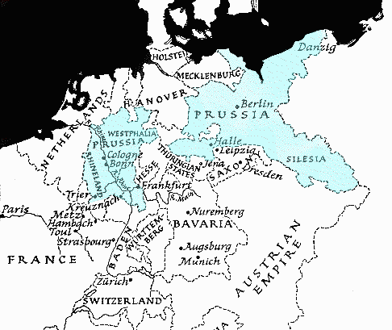

“A spectre is haunting Europe — the spectre of communism.”
—— 1848 ——
Major Works
On Free Trade, Marx & Engels
On Poland, Marx & Engels
THE COMMUNIST MANIFESTO, Marx & Engels
Demands of the Communist Party of Germany (Marx & Engels)
England and Revolution (Marx)
“The Communists disdain to conceal their views and aims. They openly declare that their ends can be attained only by the forcible overthrow of all existing social conditions. Let the ruling classes tremble at a communist revolution. The proletarians have nothing to lose but their chains. They have a world to win.”
[Communist Manifesto]
 |
Engels
The "Satisfied" Majority
Extraordinary Revelations.-Abd-el-Kader.-Guizot's Foreign Policy
To the Editor of The Northern Star
Engels
The Coercion Bill for Ireland and the Chartists
The Chartist Movement. [The Fraternal Democrats to the Working Classes of Great Britain and Ireland]
The Chartist Movement. [Meeting in Support of the National Petition]
Marx
To the Editor of La Reforme
Persecution of Foreigners in Brussels
Engels
Feargus O'Connor and the Irish People
The Situation in France. (Marx)
The Movements of 1847
The Beginning of the End in Austria
The Debat social on the Democratic Association. (Marx)
Three New Constitutions
A Word to the Riforma
Revolution in Paris
 |
The June Revolution in Paris, Marx in Neue Rheinische Zeitung
Correspondence
Minor Works
The Situation in Belgium. (Engels)
Letter to Editor of the Populaire (Marx & Engels)
To the Committee of the German Democratic Society (Marx & Engels)
To the Editor of the Newspaper L'Alba (Marx)
